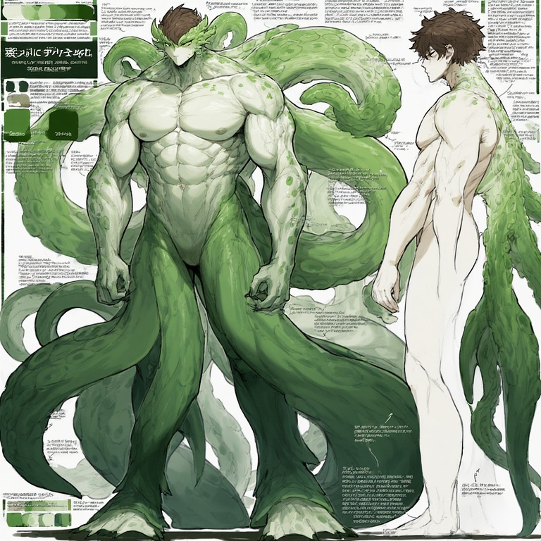
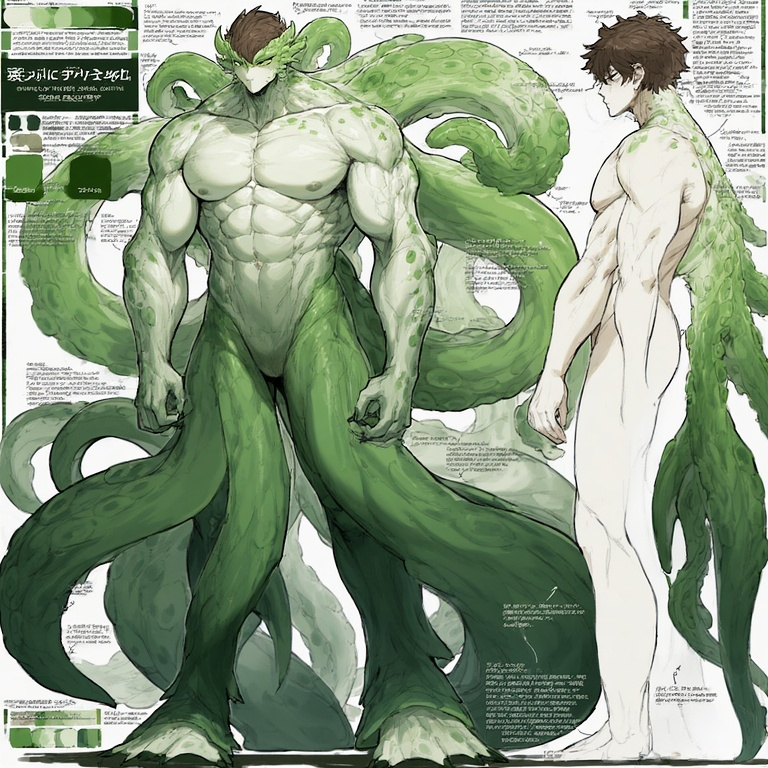
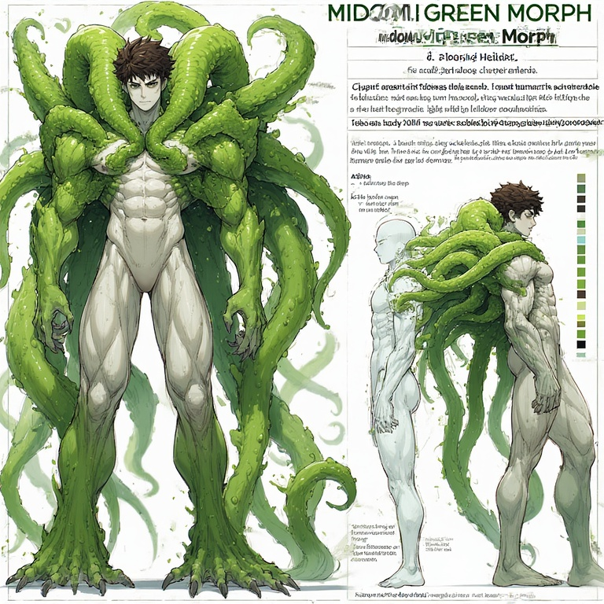
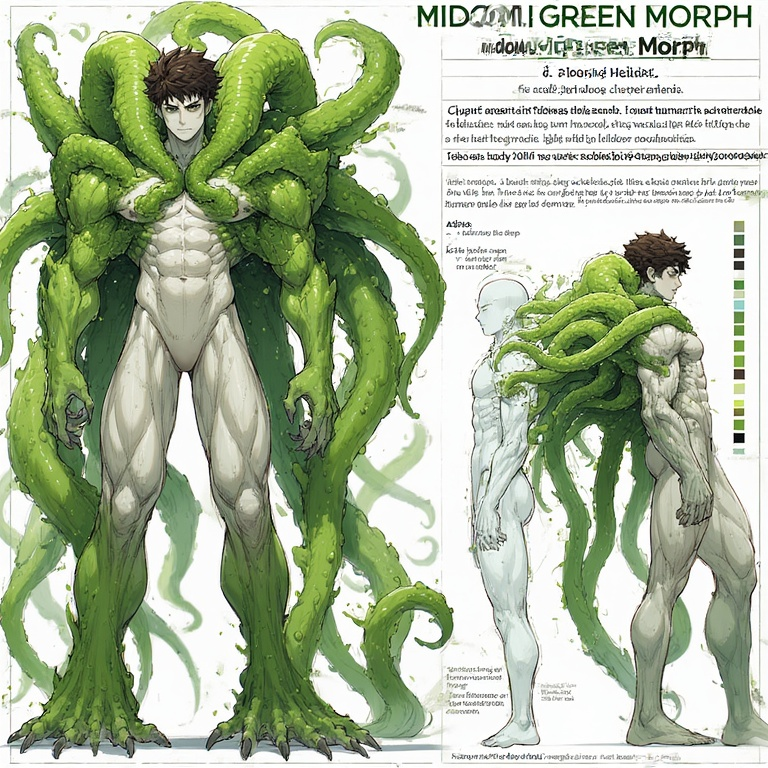
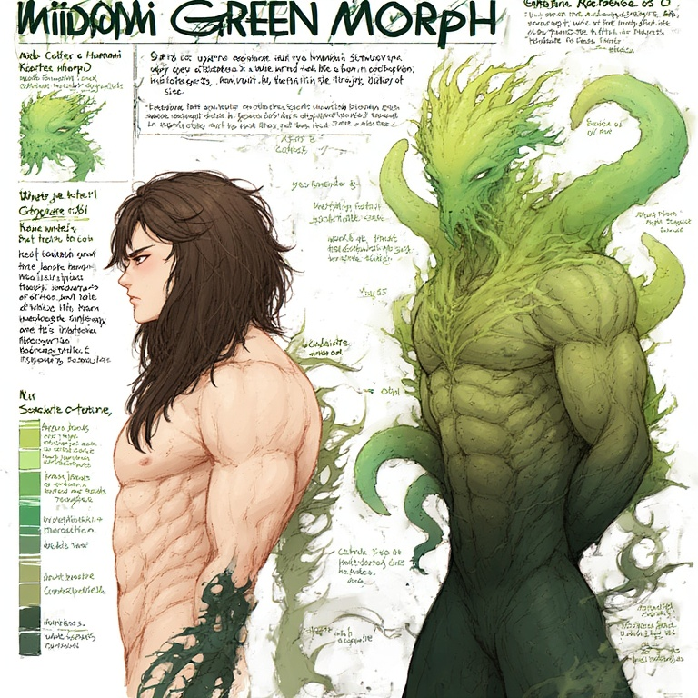
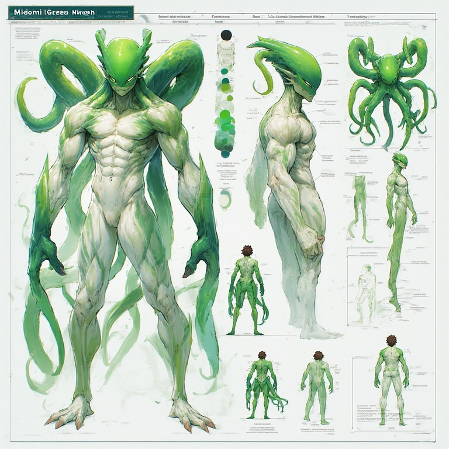
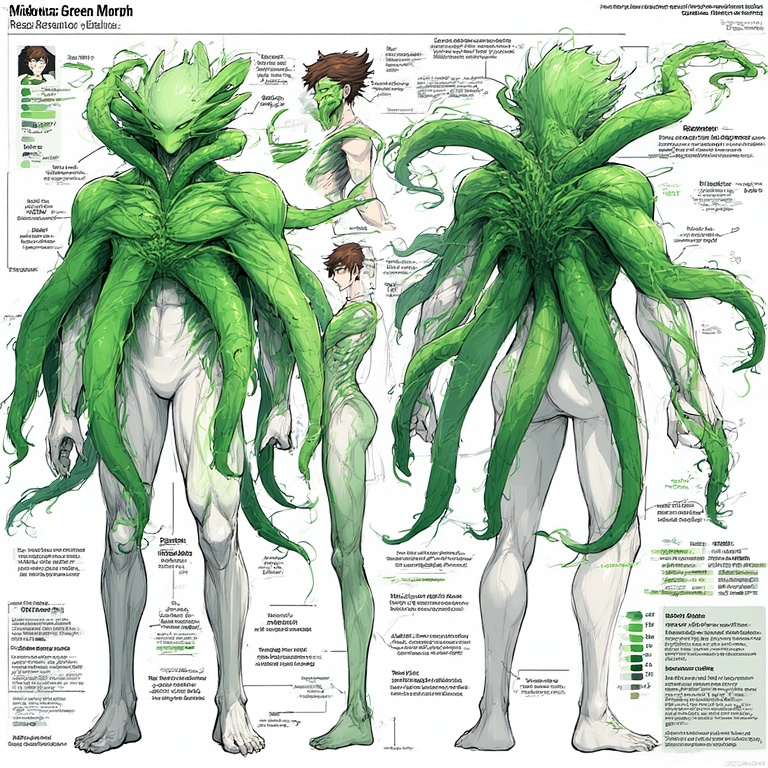
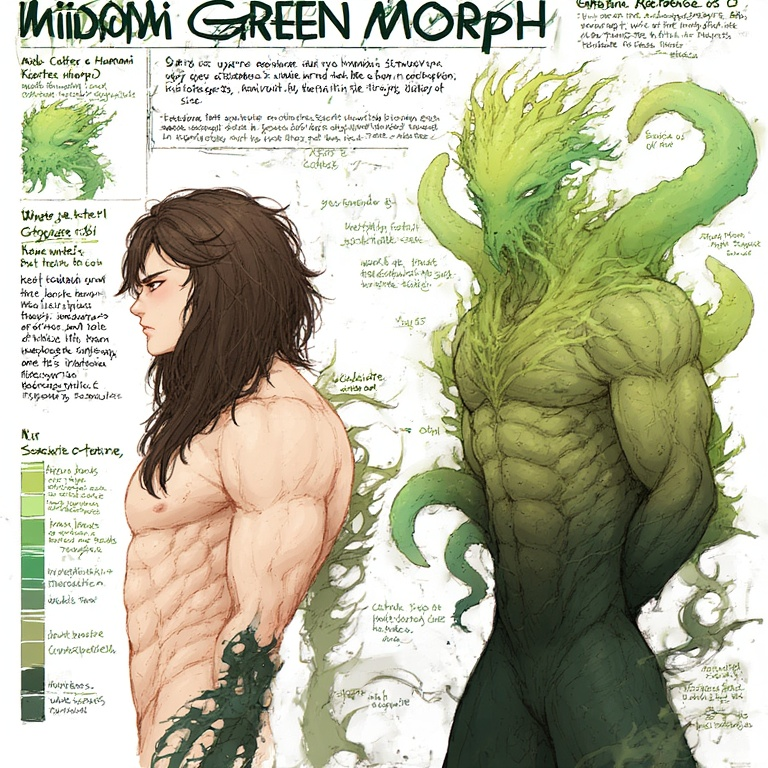
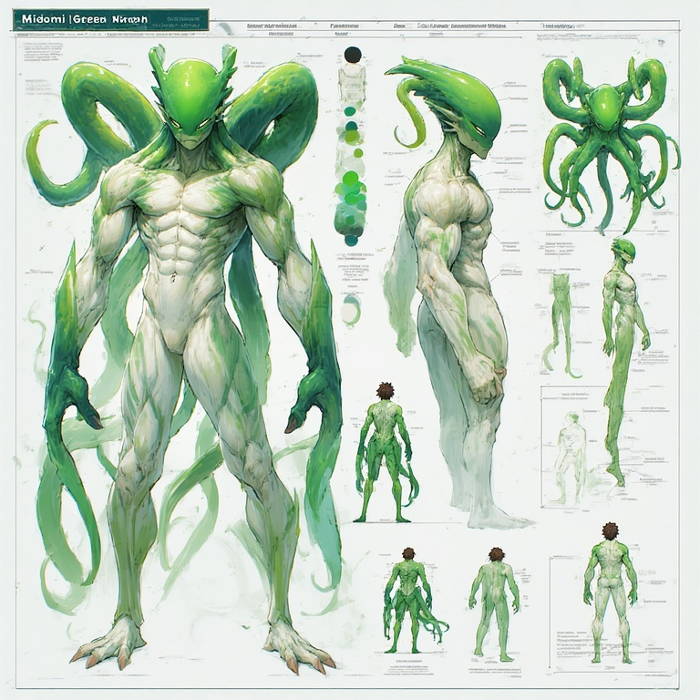
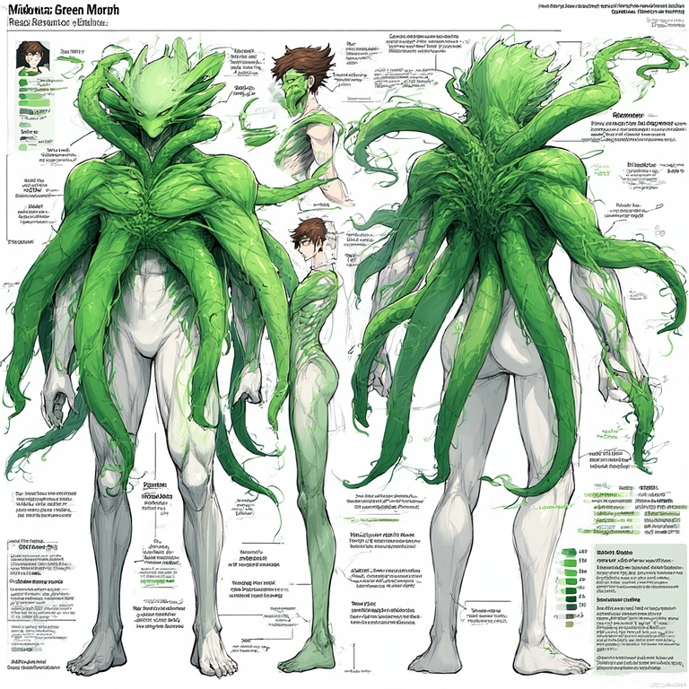

Bestiary Wing
Concept biology, alien cultures, and strange morphs from across the multiverse. These entries are written as if they were pages from an in-world codex.

Elemental Affinity: Moon, Psychic, Aurora
Magical Prowess: ★★★★☆
Technology Level: Soul- and dream-based constructs, bio-crystalline architecture
Physical Appearance
- Slender humanoids with opalescent, softly glowing skin.
- Long hair that drifts like nebula dust.
- Lower body resembles a smooth, glistening slug-tail.
- Large luminous “dream eyes”.
- During metamorphosis they manifest temporary wings of light / aurora plumes.
Core Traits
- Larva → chrysalis → adult dream-shaper life cycle.
- Walk dreams, harvest emotional energy, and condense it into Dream Pearls.
- Strong telepathy and empathy; weave auroral light and mana currents.
- Prefer psychic defense and emotional harmonics over direct violence.
Elemental Affinity: Light & Shadow (by sect)
Magical Prowess: ★★☆☆☆–★★★★☆ (varies)
Technology Level: Tribal mystic-tech, divine relic forging
Shared Anatomy
- Serpentine lower body with a long scaled tail.
- Humanoid torso with clawed hands.
- Cobra-like hood framed by feather-spines.
- Narrow, predatory face with slit pupils and venomous fangs.
2.1 White Cobra Sect

- White, silver, and pale-gold feathers and scales.
- Soft luminous hood markings and ceremonial jewelry.
- Healing venom, purifying breath, and sigil-magic.
- Trance-songs that soothe beasts and cleanse curses.
- Operate shrines and sanctuaries; serve as judges and diplomats.
2.2 Black Asp Sect

- Dark scales, black hoods, and green / violet feather-spines.
- Lean aggressive build with segmented armor and blade-like feathers.
- Shadow-infused venom and stealth-focused tactics.
- Highly stratified ranking system, unlike the egalitarian White Cobra Sect.
Elemental Affinity: Ice
Magical Prowess: ★☆☆☆☆
Technology Level: Stone-age tools empowered by rare crystal weapons
The Crole are a half-human, half-insect people who survived near extinction in endless blizzards. Their civilization rebuilt itself in underground sanctuaries, then spread into multiple fiercely competing tribes.
Dual Forms
- Insect Form – fully cold-immune, powerful and agile, but sterile.
- Humanoid Form – human-like with residual insect traits, vulnerable to the cold, but fertile.
- Revealing the humanoid form is an act of extreme trust and vulnerability.
3.1 Male Crole

- Bipedal mantis-humanoid silhouette.
- Digitigrade legs with clawed feet.
- Large raptorial forearms or scythe-like blades.
- Hard chitin plating across chest, thighs, and shoulders.
- Tribal paint made from fallen beasts to mark tribe, rank, and achievements.
3.2 Female Crole

- Based on the poodle moth: thick insulating fur and large patterned wings.
- Slender torso with long legs and taloned feet.
- Soft chitin at joints, dense fluff around neck and hips.
- Weavers – shave portions of fur to line nurseries and tunnels.
- Brood Mothers / Caretakers – rounder silhouettes signalling high fertility.
- Monstrous Warriors – bulkier, more bestial forms for elite defense.
- Standard Slender Form – the most common morphology.
Elemental Affinity: Lunar & Devil
Magical Prowess: ★★☆☆☆
Technology Level: Comparable to Earth, adapted for multi-limb ergonomics
The Midomi are an all-male humanoid species with white skin, brown hair, and seven prehensile tentacles emerging from the back. Their society recognizes two primary morphs, Pink and Green, with numerous rare high-breed variants.
4.1 Pink Morph – Base Form

- Average height around 6'3".
- Slender, boyish build with bright pink tentacles.
- Emotional and cultural heart of Midomi society.
- Primary impregnators of Green Morph egg carriers.
- Frequently involved in arts, spirituality, and interpersonal networks.
4.2 Green Morph – Base Form

- Height ranges from 7'5" to 8'0".
- Heavily muscular build with vivid green tentacles.
- Warriors, hunters, tacticians, and frequent leadership candidates.
- Often perceived as intimidating but are highly intelligent.


5.1 Matriarch
- Some Pink Morphs transform into a gigantic tentacular entity with a single core mind.
- Creates a psychic hive-mind of surrounding eggs known as the Dream Network.
- Eggs placed within radius share emotions, memories, and dreams.
- Venerated by a devoted faction as a living god.
5.2 Pastor
- Alien-like face with tentacles trailing from head and back.
- Planetary peacekeepers and high-tier diplomats.
- Specialize in telepathic negotiation and conflict de-escalation.
5.3 Custodian
- Appears as a powerful pink tentacle bearing a featureless human head.
- Silent enforcers able to turn invisible.
- Use Brain Shock, a concentrated psychic blast: one strike disorients, three in succession shatter the mind.
5.4 Archangel
- All-white body with a black mask-like face and red eyes.
- Elite bodyguards for nurseries, hospitals, and reproductive facilities.
- Balance physical strength with precise psychic shielding.
5.5 Ethereal Breed
- Can pass for fully human at a glance.
- Born infertile but bear a cosmic birthmark on the back that manifests ghostly tentacles.
- Specialists in long-range telepathy, espionage, and information gathering.
5.6 Nursemaid
- Elongated head, body composed almost entirely of tentacles, classic alien eyes.
- Rare Pink High Breed with formidable psychic power.
- Assigned as unseen shadow-security for the Midomi Prime Minister.
 

 

 





All Green High Breeds are tied to the Midomi military or planetary defense structure and emphasize overwhelming physical force supported by keen intelligence.
6.1 Tormentor
- All-green head with a pale body; tentacles packed with specialized toxins.
- Right-side tentacles carry a lethal hallucinogenic poison.
- Left-side tentacles deliver a neurotoxin that paralyzes the legs and kills over two weeks.
- Used primarily for private executions and interrogations.
6.2 Champion
- Sleek shell-like helmet with two small antennae.
- Apex soldiers and hunters with perfect night vision.
- Permitted four Midomi wives; dedicated nurseries attempt to breed more Champions.
6.3 Tactician
- Base form appears as a muscular human with minimal tentacles.
- Ascended form reveals thick tentacles, green skin, and a monstrous visage.
- Brilliant strategists and military advisors.
- Possess weak telekinesis for fine battlefield control.
6.4 Warlord
- Massive, heavy tentacle clusters erupt from back and shoulders.
- Capable of lifting and tearing apart war machines and heavy weaponry.
- Born with fragile hearts that may rupture under extreme adrenaline.
- Deployed only when a single appearance can change the tide of battle.
6.5 Olympian
- White-bodied High Breeds with large webbed, fish-like feet.
- Serve as honor guard of the Midomi homeworld and as elite police.
- Where Archangels guard medical and reproductive sites, Olympians guard everything else.
6.6 Titan
- Colossal, bestial High Breed driven by pure rage rather than intellect.
- Imprints on an infertile Pink Morph handler at hatching and protects them absolutely.
- Entire society works to keep Titans calm, knowing the destruction they can cause.
6.7 Atlas
- White body with massively reinforced tentacles able to block gunfire and artillery.
- Mask-like tentacle structures protect their eyes.
- Hyper-intelligent and frequently chosen as Prime Ministers or supreme commanders.
- Embodiments of ideal Midomi leadership: power, restraint, and strategy.
6.8 “Hunk” Variant
- Genetically ordinary Green Morphs with especially striking features.
- Identical in ability to standard Green Morphs but considered exotic and highly desirable.
- Enjoy elevated social status as sought-after partners among Pink Morphs.